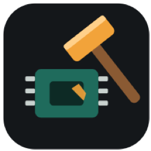
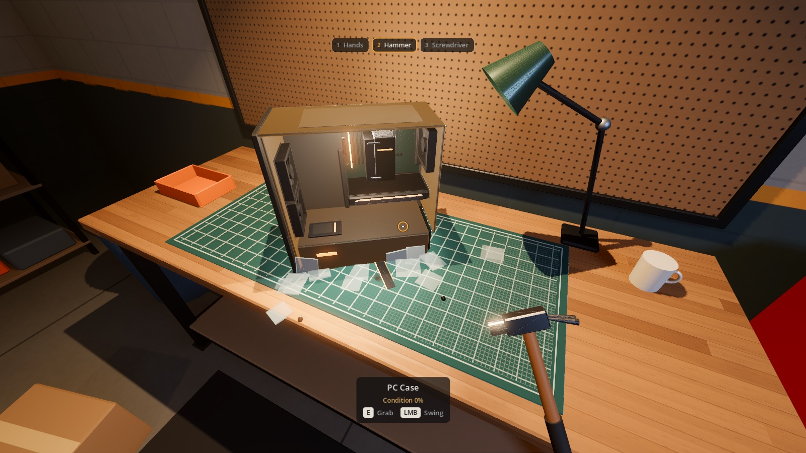

iPhone · iPad · Mac · PC
Gadget Wreck Lab
A warm workshop, a workbench, and a pile of old electronics. Unscrew panels carefully to recover valuable parts, or reach for the hammer and watch glass shatter, plastic crack and steel dent.

- Every part is modelled and comes apart for real: thumbscrews, panels, fans, RAM, GPU, motherboard
- Hammer damage depends on the material: glass shatters, plastic and circuit boards crack, steel dents
- Careful dismantling keeps parts intact and valuable; smashing is faster but costs condition
- All brands and devices in the game are fictional
- No ads, no data collection, plays fully offline
Türkçe
Sıcak bir atölyede eski elektronikleri sök, parçala ve değerlendir. Vidaları dikkatle sökerek değerli parçaları sağlam çıkar ya da çekici al: cam tuzla buz olur, plastik çatlar, çelik göçer. Reklam yok, veri toplama yok, tamamen çevrimdışı.
Privacy Policy / Gizlilik · Terms of Use / Kullanım Koşulları · Support / Destek